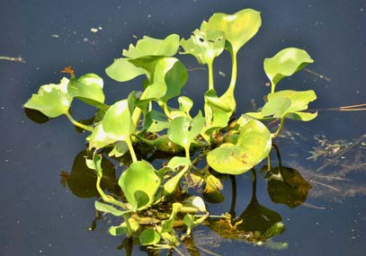
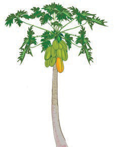
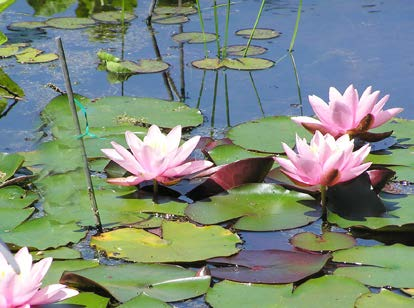
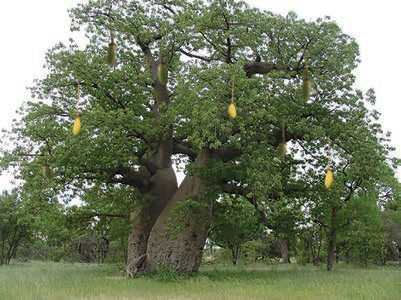

Plants
There are different types of plants in our environment. Some plants grow in water while others grow on land. Examples of plants that grow in water are water hyacinths and water lilies. Examples of plants that grow on land are baobab tree and pawpaw tree. Figure 17 shows examples of plants.

Water hyacinths

Pawpaw tree

Water lilies

Baobab tree
Figure 17: Plants which grow in water and on land